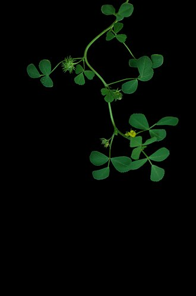

Survive drying out
How this trait became 2 genes to order.
All 37 genes · How the search works · Every trait
1. What this trait needs done
A trait is rarely one thing. Each job below needs its own protein.
| Job | What we search for | Why it is a separate job |
|---|---|---|
| Hold everything together once the water is gone | dehydrin, late embryogenesis abundant,
hydrophilin, desiccation |
as water leaves, proteins and membranes collapse into each other. These wrap around them and hold the shape. Order matters here: ‘hydrophilin’ is the umbrella term for the whole class, while dehydrins and LEA proteins are the specific, best-studied members. With the umbrella term first, a yeast hydrophilin beat six plant dehydrins, because term order outranks the rule against over-studied organisms. Specific terms go first |
| Make the sugar that protects it while dry | trehalose-phosphate synthase |
trehalose forms a glass that holds cell structures in place; a separate mechanism from the wrapping proteins |
Term source: added by hand – no UniProt keyword matches ‘drying’
Term source: added by hand – no UniProt keyword matches ‘dried’
Term source: added by hand – the classic drying-protectant families
2. What the search returned
| Search term | Proteins found |
|---|---|
trehalose-phosphate synthase |
24 |
dehydrin |
7 |
desiccation |
5 |
hydrophilin |
4 |
late embryogenesis abundant |
3 |
43 different proteins once duplicates are removed.
3. What was thrown out
| Rule it broke | How many |
|---|---|
| comes from a germ that makes people ill | 9 |
34 survived.
All 9 rejected proteins
| Protein | From | Found by | Rejected because |
|---|---|---|---|
| Hydrophilin PGA14 | Candida albicans | hydrophilin | comes from a germ that makes people ill |
| Alpha,alpha-trehalose-phosphate synthase [UDP-formin | Aspergillus fumigatus | trehalose-phosphate synthase | comes from a germ that makes people ill |
| Alpha,alpha-trehalose-phosphate synthase [UDP-formin | Aspergillus fumigatus | trehalose-phosphate synthase | comes from a germ that makes people ill |
| Alpha,alpha-trehalose-phosphate synthase [UDP-formin | Candida albicans | trehalose-phosphate synthase | comes from a germ that makes people ill |
| Trehalose-6-phosphate synthase | Mycobacterium tuberculosis | trehalose-phosphate synthase | comes from a germ that makes people ill |
| Trehalose-6-phosphate synthase | Mycolicibacterium smegmati | trehalose-phosphate synthase | comes from a germ that makes people ill |
| Alpha,alpha-trehalose-phosphate synthase [UDP-formin | Yarrowia lipolytica | trehalose-phosphate synthase | comes from a germ that makes people ill |
| Alpha,alpha-trehalose-phosphate synthase [UDP-formin | Aspergillus niger | trehalose-phosphate synthase | comes from a germ that makes people ill |
| Alpha,alpha-trehalose-phosphate synthase [UDP-formin | Kluyveromyces lactis | trehalose-phosphate synthase | comes from a germ that makes people ill |
4. How the winner is picked
From the survivors, one protein per job. Ties break in this order:
- nothing rules it out
- the term it matched sits higher in the job’s list
- not an over-studied lab organism
- better curation score
- shorter, because you pay per letter of DNA
5. The 2 genes to order
Dehydrin CAS31
- Job: Hold everything together once the water is gone
- From:

Medicago truncatula - Size: 312 amino acids → 939 letters of DNA
- UniProt: B1NY81
Sequences
Protein:
MSQYQQGYGDQTRRVDEYGNPLTSQGQVDQYGNPISGGGMTGATGHGHGHHQQHHGVGVDQTTGFGSNTGTGTGYGTHTGSGGTHTGGVGGYGTTTEYGSTNTGSGYGNTDIGGTGYGTGTGTGTTGYGATGGGTGVGYGGTGHDNRGVMDKIKEKIPGTDQNASTYGTGTGYGTTGIGHQQHGGDNRGVMDKIKEKIPGTDQNQYTHGTGTGTGTGYGTTGYGASGVGHQQHGEKGVMDKIKEKIPGTEQNTYGTGTGTGHGTTGYGSTGTGHGTTGYGDEQHHGEKKGIMEKIKEKLPGTGSCTGHGQGHDNA to order:
ATGTCCCAATACCAGCAGGGTTACGGTGATCAAACCCGTAGAGTTGACGAATACGGCAATCCTCTCACCTCTCAGGGTCAAGTTGACCAATACGGTAACCCTATCTCCGGTGGTGGTATGACTGGTGCTACTGGTCATGGTCATGGTCATCATCAACAGCACCACGGTGTTGGTGTTGATCAGACCACTGGTTTCGGTTCTAACACTGGTACCGGTACCGGTTACGGTACTCATACTGGTTCTGGTGGTACTCATACTGGTGGTGTTGGCGGTTACGGTACTACTACTGAATACGGCTCTACCAATACCGGTTCCGGTTACGGTAACACCGATATCGGTGGTACTGGTTATGGTACTGGTACTGGCACTGGTACTACTGGCTATGGTGCTACTGGTGGTGGTACTGGTGTTGGTTATGGTGGTACTGGTCATGATAACCGTGGTGTCATGGACAAGATCAAGGAGAAGATCCCCGGTACCGATCAAAACGCTTCCACTTACGGTACTGGTACTGGTTATGGTACCACCGGCATCGGTCATCAACAACATGGTGGTGATAACCGTGGTGTTATGGATAAGATCAAGGAGAAGATCCCCGGCACCGACCAAAACCAGTACACTCACGGTACTGGTACTGGTACTGGTACTGGTTACGGCACTACTGGTTATGGTGCTTCTGGTGTTGGTCATCAGCAACACGGTGAAAAGGGTGTCATGGATAAGATCAAGGAGAAGATCCCCGGCACTGAGCAGAATACCTACGGTACCGGTACTGGTACTGGTCATGGTACTACTGGTTACGGTTCTACTGGTACTGGCCATGGTACTACCGGTTACGGTGATGAACAACACCATGGTGAAAAGAAGGGCATCATGGAGAAGATCAAGGAGAAGCTCCCCGGTACTGGTTCTTGTACTGGTCATGGTCAAGGTCATTAAAlpha,alpha-trehalose-phosphate synthase [UDP-forming]
- Job: Make the sugar that protects it while dry
- From: Pichia angusta
- Size: 475 amino acids → 1428 letters of DNA
- UniProt: O94213
Sequences
Protein:
MVKGNVIVVSNRIPVTIKKTEDDENGKSRYDYTMSSGGLVTALQGLKNPFRWFGWPGMSVDSEQGRQTVERDLKEKFNCYPIWLSDEIADLHYNGFSNSILWPLFHYHPGEMNFDEIAWAAYLEANKLFCQTILKEIKDGDVIWVHDYHLMLLPSLLRDQLNSKGLPNVKIGFFLHTPFPSSEIYRILPVRKEILEGVLSCDLIGFHTYDYVRHFLSSVERILKLRTSPQGVVYNDRQVTVSAYPIGIDVDKFLNGLKTDEVKSRIKQLETRFGKDCKLIIGVDRLDYIKGVPQKLHAFEIFLERHPEWIGKVVLIQVAVPSRGDVEEYQSLRAAVNELVGRINGRFGTVEFVPIHFLHKSVNFQELISVYAASDVCVVSSTRDGMNLVSYEYIACQQDRKGSLVLSEFAGAAQSLNGALVVNPWNTEELSEAIYEGLIMSEEKRRGNFQKMFKYIEKYTASYWGENFVKELTRVDNA to order:
ATGGTCAAGGGTAACGTCATCGTCGTTTCCAACCGTATCCCTGTTACCATCAAGAAGACCGAGGACGATGAGAACGGTAAGTCCAGATACGACTACACCATGTCTTCTGGCGGTCTCGTTACTGCTTTGCAAGGTTTGAAGAACCCTTTCCGTTGGTTCGGCTGGCCTGGTATGTCTGTTGATTCTGAACAAGGTAGACAGACTGTCGAGCGTGACCTCAAGGAGAAGTTCAACTGCTACCCTATTTGGTTGTCCGACGAGATCGCCGATCTCCATTACAACGGTTTCTCCAACTCTATCTTGTGGCCCTTGTTCCACTACCACCCTGGTGAAATGAACTTCGACGAAATCGCTTGGGCTGCTTACTTGGAGGCTAACAAGCTCTTCTGTCAGACCATTCTCAAGGAGATCAAGGACGGCGACGTTATCTGGGTTCATGACTACCACTTGATGCTCTTGCCTTCTCTCCTCCGCGATCAACTCAACTCTAAGGGTTTGCCTAACGTTAAGATCGGCTTCTTCCTCCACACCCCTTTCCCTTCTTCTGAGATCTACAGAATCCTCCCTGTTCGTAAGGAGATCCTCGAGGGTGTTCTCTCTTGTGATTTGATCGGCTTCCACACTTACGACTACGTCCGCCACTTCTTGTCTTCCGTTGAAAGAATCCTCAAGCTCCGTACTTCCCCTCAGGGTGTTGTTTACAACGACAGACAAGTCACTGTCTCCGCTTATCCCATCGGCATCGACGTTGATAAGTTCCTCAACGGTTTGAAGACCGACGAAGTCAAGTCCCGCATCAAGCAATTGGAGACTCGTTTCGGTAAAGACTGCAAGCTCATCATCGGCGTCGACAGATTGGATTACATCAAGGGCGTTCCTCAAAAGCTCCATGCTTTCGAGATCTTCCTCGAGAGACATCCTGAGTGGATCGGTAAGGTCGTTTTGATCCAGGTTGCTGTCCCTTCTAGAGGTGATGTCGAGGAATACCAGTCTTTGCGTGCTGCTGTTAACGAGTTGGTCGGTAGAATCAACGGTCGTTTCGGTACTGTCGAGTTCGTTCCTATCCACTTCCTCCATAAGTCCGTCAACTTCCAGGAGCTCATCTCCGTTTACGCTGCTTCTGACGTTTGTGTCGTTTCTTCCACCCGTGATGGTATGAACCTCGTCTCTTACGAGTACATCGCCTGTCAACAAGACCGCAAGGGTTCTTTGGTCTTGTCTGAGTTCGCTGGTGCTGCTCAATCTTTGAACGGCGCTTTAGTCGTTAACCCTTGGAACACCGAGGAGCTCTCTGAAGCTATTTACGAGGGTCTCATTATGTCCGAGGAAAAGCGCCGCGGTAACTTCCAAAAAATGTTCAAGTACATCGAGAAGTACACCGCCTCCTACTGGGGCGAGAACTTTGTTAAGGAATTGACCAGAGTTTAA6. The 32 we did not order
These passed every rule. Each job takes one protein, so the rest simply were not needed, and every extra gene costs the host energy.
5 of them were ruled out for a different reason, and only those say why.
See them all
| Protein | From | Length | Found by | Ruled out because |
|---|---|---|---|---|
| Alpha,alpha-trehalose-phosphate synthase [UDP-form | Saccharomyces cerevisiae | 495 | trehalose-phosphate synthase | only one part of a machine; the other parts are not being ordered |
| Putative alpha,alpha-trehalose-phosphate synthase | Schizosaccharomyces pomb | 891 | trehalose-phosphate synthase | only one part of a machine; the other parts are not being ordered |
| Putative alpha,alpha-trehalose-phosphate synthase | Schizosaccharomyces pomb | 944 | trehalose-phosphate synthase | only one part of a machine; the other parts are not being ordered |
| Trehalose synthase complex regulatory subunit TPS3 | Saccharomyces cerevisiae | 1054 | trehalose-phosphate synthase | only one part of a machine; the other parts are not being ordered |
| Trehalose synthase complex regulatory subunit TSL1 | Saccharomyces cerevisiae | 1098 | trehalose-phosphate synthase | only one part of a machine; the other parts are not being ordered |
| ATPase-stabilizing factor 15 kDa protein | Saccharomyces cerevisiae | 84 | hydrophilin | |
| Alpha,alpha-trehalose-phosphate synthase [UDP-form | Schizosaccharomyces pomb | 513 | trehalose-phosphate synthase | |
| Alpha,alpha-trehalose-phosphate synthase [UDP-form | Botrytis cinerea | 523 | trehalose-phosphate synthase | |
| Alpha,alpha-trehalose-phosphate synthase [UDP-form | Zygosaccharomyces rouxii | 485 | trehalose-phosphate synthase | |
| Alpha,alpha-trehalose-phosphate synthase [UDP-form | Encephalitozoon cuniculi | 459 | trehalose-phosphate synthase | |
| Alpha,alpha-trehalose-phosphate synthase [UDP-form | Arabidopsis thaliana | 942 | trehalose-phosphate synthase | |
| Alpha,alpha-trehalose-phosphate synthase [UDP-form | Arabidopsis thaliana | 862 | trehalose-phosphate synthase | |
| Alpha,alpha-trehalose-phosphate synthase [UDP-form | Arabidopsis thaliana | 860 | trehalose-phosphate synthase | |
| Bifunctional trehalose-6-phosphate synthase/phosph | Thermoproteus tenax | 731 | trehalose-phosphate synthase | |
| Dehydrin COR47 | Arabidopsis thaliana | 265 | dehydrin | |
| Dehydrin DHN1 | Avicennia marina | 195 | dehydrin | |
| Dehydrin DHN1 | Zea mays | 168 | dehydrin | |
| Dehydrin ERD10 | Arabidopsis thaliana | 260 | dehydrin | |
| Dehydrin ERD14 | Arabidopsis thaliana | 185 | dehydrin | |
| Dehydrin HIRD11 | Arabidopsis thaliana | 98 | dehydrin | |
| Desiccation-related protein At2g46140 | Arabidopsis thaliana | 166 | desiccation | |
| Desiccation/radiation resistance protein DR_1769 | Deinococcus radiodurans | 574 | desiccation | |
| Hydrophilin YNL190W | Saccharomyces cerevisiae | 204 | hydrophilin | |
| Late embryogenesis abundant protein 1 | Oryza sativa subsp. indi | 333 | late embryogenesis abundant | |
| Late embryogenesis abundant protein 19 | Oryza sativa subsp. indi | 200 | late embryogenesis abundant | |
| Late embryogenesis abundant protein 31 | Arabidopsis thaliana | 262 | late embryogenesis abundant | |
| Low-temperature-induced 78 kDa protein | Arabidopsis thaliana | 710 | desiccation | |
| Probable alpha,alpha-trehalose-phosphate synthase | Arabidopsis thaliana | 851 | trehalose-phosphate synthase | |
| Probable desiccation-related protein LEA14 | Arabidopsis thaliana | 151 | desiccation | |
| Probable peroxygenase 3 | Arabidopsis thaliana | 236 | desiccation | |
| Protein GRE1 | Saccharomyces cerevisiae | 168 | hydrophilin | |
| Trehalose-6-phosphate synthase | Escherichia coli | 474 | trehalose-phosphate synthase |